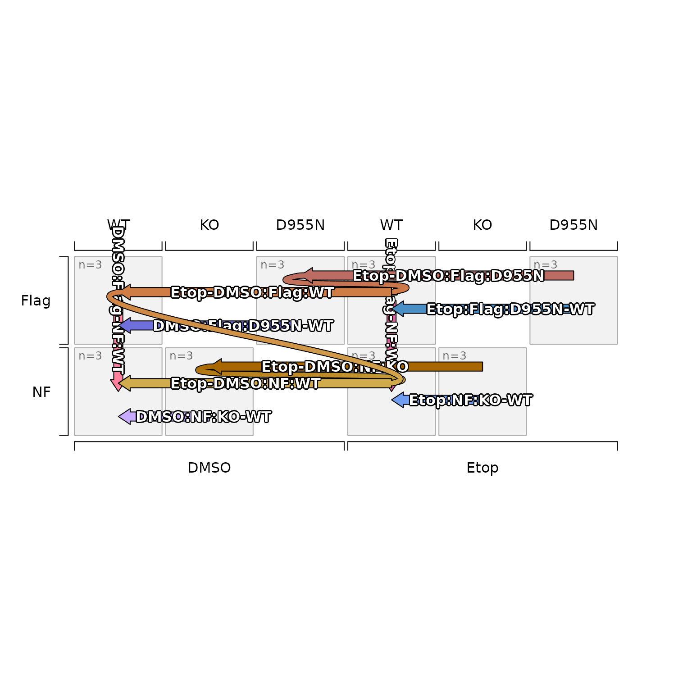

plot() method for SEDesign objects, a thin wrapper around
plot_sedesign(). S7 objects retain their class in the S3 class()
vector (see print.SEDesign()), so this S3 method is dispatched by
the base plot() generic for SEDesign objects.
Usage
# S3 method for class 'SEDesign'
plot(x, ...)Arguments
- x
SEDesignobject as returned bygroups_to_sedesign().- ...
additional arguments passed to
plot_sedesign().
Value
see plot_sedesign().
See also
Other jam experiment design:
SEDesign(),
[,SEDesign-method,
check_sedesign(),
contrast2comp(),
contrast_colors_by_group(),
contrast_names_to_sedesign(),
contrastnames(),
contrasts(),
contrasts<-(),
contrasts_to_factors(),
contrasts_to_venn_setlists(),
design,SEDesign-method,
draw_oneway_contrast(),
draw_twoway_contrast(),
factors(),
filter_contrast_names(),
groups(),
groups_to_sedesign(),
plot_sedesign(),
print,SEDesign-method,
samples(),
sedesign_to_factors(),
sort_contrasts(),
validate_sedesign()
Examples
isamples_1 <- paste0(
rep(c("DMSO", "Etop", "DMSO", "Etop"), each=6),
"_",
rep(c("NF", "Flag"), each=12),
"_",
rep(c("WT", "KO", "WT", "KO", "WT", "D955N", "WT", "D955N"), each=3),
"_",
LETTERS[1:3])
idf <- data.frame(jamba::rbindList(strsplit(isamples_1, "_")))[,1:3]
rownames(idf) <- isamples_1;
sedesign_1 <- groups_to_sedesign(idf)
plot(sedesign_1)
